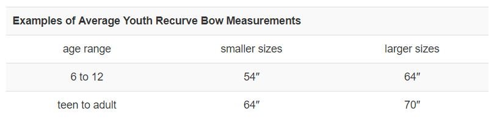
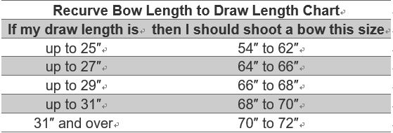

Recurve Bow
You can identify the recurve bow by the curved tips at either end of the bow, which increases the speed of the bow and the smoothness of the release. This bow is known for its widespread use in target archery and the Olympics, where it is the only style of bow allowed in competition. Many archers also shoot recurve bows in field archery, 3D archery, and in bowhunting with higher poundage recurves.
What is special about a recurve?
Recurves can be one solid piece, but most competition recurves on the market today are known as “takedown” recurve bows. This means that once unstrung, the bow will break down into three parts to allow for easy transport and adaptability. You grip the bow in the middle part, which is called the “riser” and is usually made of metal, but may also be made from wood or carbon. The top and bottom parts are called “limbs” which are made of wood, fiberglass, carbon, and other materials. Your bow gets its power from the unique curve at the limb tips, a design first developed by Egyptian archers thousands of years ago.
A beginner's guide to recurve archery
What should I look for in my first recurve bow?
A good rule of thumb is to make sure the bow is slightly shorter than the archer. However, the main considerations are draw weight and draw length. This makes the process of finding the right bow a little more complex than simply ordering one online or picking one up at your local shop.
Sizing for recurve bows
It is always best to ask a coach or more experienced archer to help with measurements. See our section on how to measure draw length to learn more about the process.
Are you looking for a recurve bow for a youth archer? Here are some average sizes to consider:
Because archers come in all ages and sizes, here is a more comprehensive size chart for matching draw length to recurve bow length:

Your bow should also have a relatively low draw weight, regardless of the archer’s natural strength. For more in-depth reasons why low poundage is beneficial to new archers, see the section on draw weight. Take down recurve bows have the advantage that an archer is able to change the limbs to move up or down in draw weight.
#Article from Discover Archery
Read More
> Compound Bow> Traditional Bow
> Crossbow